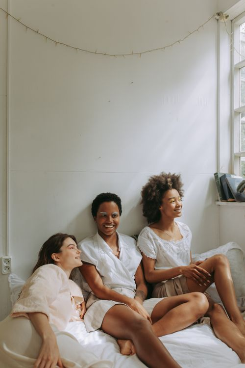
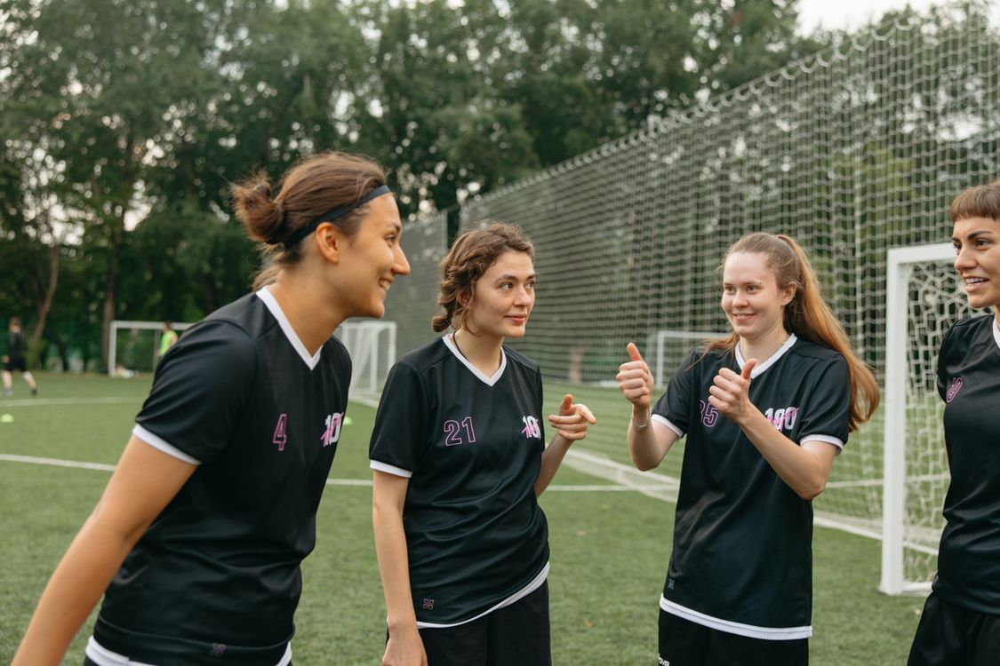
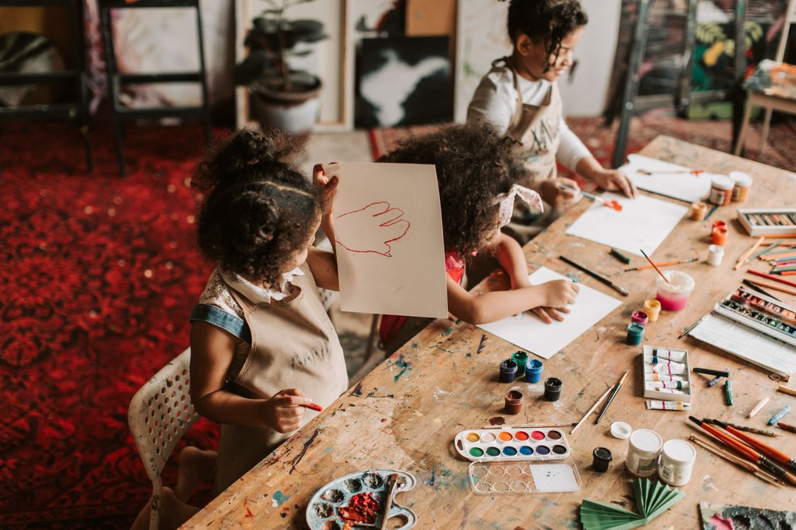
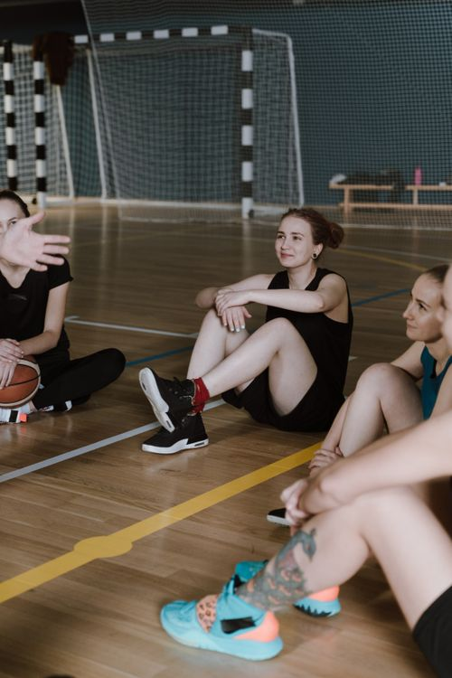

Bridging Gaps. Expanding Opportunities.
Exposure. Access. Experience.
Every young woman deserves access to opportunities, resources, relationships, and experiences that support her growth and expand what’s possible for her future.
At Project Bridging, we connect young women to culturally affirming mentorship, educational enrichment, leadership development, wellness, community engagement, and meaningful experiences beyond the classroom.
We are creating a community where young women are supported during critical stages of development, encouraged to discover their identities, equipped with practical skills, and given opportunities to exercise their voices and lead.
Join the Hive Explore Our Programs Support Our Work

More Than Mentorship. A Community of Opportunity.
Established in 2022, Project Bridging is the signature youth development initiative of Bridging Youth Advancement & Resource Programs (BARYP), serving young women in grades 5–12 throughout Des Moines and surrounding communities.
Project Bridging brings together young women, mentors, families, educators, and community partners through shared learning, supportive relationships, leadership opportunities, and meaningful experiences.
Known as The Hive, our community provides space for young women to connect, explore, develop confidence, strengthen skills, and grow alongside one another.
Our work is grounded in a simple belief: opportunity and access matter.
We are intentional about connecting young women to people, places, resources, and experiences that can support their development and broaden their understanding of what’s possible.
Opportunity Should Not Be Out of Reach.
A young woman’s growth and development are influenced by more than what happens in the classroom.
Her relationships, environment, family circumstances, access to resources, sense of belonging, and exposure to opportunities all play a role in shaping her experiences and future.
Yet not every young woman has equal access to mentorship, enrichment opportunities, supportive networks, essential resources, or experiences that allow her to explore new possibilities.
Financial barriers, transportation challenges, limited networks, and social inequities can create obstacles to participation.
Project Bridging exists to help close these gaps.
We provide intentional guidance and support during critical stages of development while working to reduce the barriers that prevent young women from accessing meaningful opportunities.
We believe a young woman’s circumstances should not determine the limits of her experiences or aspirations.
Developing the Whole Young Woman.
Our approach recognizes that growth happens through interconnected experiences, relationships, and opportunities.
Project Bridging connects seven essential areas of support that contribute to a young woman’s development.
Belonging & Connection
Building sisterhood, supportive relationships, positive identity, and meaningful opportunities for youth voice.
Exploration & Experiences
Introducing young women to new environments, cultures, perspectives, and possibilities beyond their everyday surroundings.
Health & Well-Being
Supporting wellness, healthy relationships, self-care, essential needs, and emotional development.
Family & Community Support
Strengthening connections among young women, families, trusted adults, and community resources.
Economic Opportunity
Developing financial knowledge, entrepreneurship skills, career awareness, and future readiness.
Lifelong Learning
Expanding access to literacy, STEM, critical thinking, educational enrichment, and real-world learning.
Equitable Access
Working to reduce financial, transportation, resource, and participation barriers.
Together, these connected areas form a whole-person approach that addresses more than one part of a young woman’s life.
Our Pathway to Change
Access → Belonging → Empowerment → Leadership → Community Impact
Through this pathway, we create opportunities for young women to build relationships, develop confidence and skills, practice leadership, and contribute to their communities.
Opportunities to Learn. Connect. Explore. Lead.
Project Bridging offers interconnected programs and initiatives that support personal growth, educational development, leadership, wellness, and real-world readiness.
Mentorship & Sisterhood
Relationships That Support Growth
Through consistent mentorship, sisterhood circles, peer engagement, and supportive relationships, young women develop confidence, communication skills, positive connections, and a sense of belonging.
Bee University
Learning Beyond the Classroom
Our educational enrichment program connects literacy, STEM, critical thinking, financial literacy, creative expression, civic education, life skills, and career exploration through engaging, real-world learning experiences.
Leadership & Youth Voice
From Participation to Leadership
Through youth leadership roles, public speaking, community service, civic engagement, and advocacy, mentees gain opportunities to practice leadership, make decisions, and contribute to positive change.
Wellness & Essential Resources
Supporting Her Whole Well-Being
Through Thynk Pynk, Project Pocketbook, and Supply the Hive, we support wellness education, healthy relationships, menstrual equity, personal care, and access to essential resources.
Financial Literacy & Entrepreneurship
Preparing for Future Opportunities
Through Bee Empowered and Bee the Boss, young women explore money management, entrepreneurship, financial decision-making, innovation, and pathways toward economic independence.
Experiential Learning
The World Is Part of the Classroom
Educational excursions, cultural experiences, college visits, career exploration, and hands-on learning connect young women to new environments, ideas, and opportunities.
Real Experiences. Real Connections. Meaningful Growth.
Project Bridging comes to life through the young women we serve, the relationships they build, the experiences they share, and the opportunities they explore.
From mentorship circles and educational workshops to leadership experiences, service projects, and cultural excursions, every activity creates an opportunity to learn something new.
Our young women are not simply participants in programming. They are thinkers, learners, creators, advocates, and emerging leaders whose perspectives and contributions matter.
Experience the Hive
Discover moments from our programs, hear directly from our mentees, and see how young women are engaging in new experiences and developing their voices.



Experience Changes Perspective.
We believe meaningful learning extends beyond textbooks, classrooms, and traditional educational settings.
Educational excursions provide opportunities for young women to experience places, institutions, careers, cultures, and environments they may not otherwise encounter.
Our experiential learning opportunities connect education, leadership, cultural awareness, career exploration, and personal development.
Where Learning Can Take Us
College & University Exposure
Campus visits, HBCU exploration, college fairs, and postsecondary learning opportunities.
STEM & Innovation
Hands-on experiences in science, technology, engineering, creativity, and career discovery.
History, Culture & Civic Learning
Museums, historical landmarks, cultural institutions, government spaces, and community learning experiences.
Leadership & Outdoor Education
Retreats, recreation, team-building, and experiences that encourage independence, collaboration, and discovery.
Featured Educational Experience
The Hive Takes Disney. An educational expedition initiative designed to connect STEM learning, leadership, creativity, global awareness, and career exploration through immersive experiences.
With community support, Project Bridging works to make significant educational opportunities more accessible to participating young women.
What Matters Is What Young Women Gain.
Our work is centered on creating meaningful opportunities and supporting measurable growth.
We look beyond the number of activities offered to consider how young women engage, what they learn, the relationships they develop, and how they apply their experiences.
We Focus on Growth in Five Areas
Access & Participation
Increasing access to educational, cultural, leadership, and developmental opportunities.
Belonging & Relationships
Building supportive relationships, positive peer connections, and consistent engagement.
Knowledge & Skills
Strengthening critical thinking, financial literacy, communication, decision-making, and practical life skills.
Confidence & Leadership
Creating opportunities for self-expression, self-advocacy, responsibility, and youth leadership.
Community Contribution
Supporting young women as they participate in service, civic learning, advocacy, and community initiatives.
Impact at a Glance
150+
Young women reached through Project Bridging programming, experiences, and events — and growing.
This section will feature verified participation data, program outcomes, educational experiences, and mentee reflections as they are documented.
Follow the Journey. Witness the Growth.
Every young woman has a story, and every experience becomes part of her journey.
The Art of Beecoming: Welcome to the Hive is Project Bridging’s storytelling series, offering a closer look at our community, our young women, and the experiences that shape their development.
Through stories, conversations, videos, and behind-the-scenes moments, we invite you to discover what happens when young women have opportunities to explore, connect, learn, and lead.
Meet our mentees. Experience our programs. Hear their perspectives. See the work behind the mission.
This is The Art of Beecoming. Welcome to the Hive.
Opportunity Grows Through Connection.
Expanding access to meaningful opportunities requires collaboration.
Project Bridging works to build relationships with educators, businesses, nonprofits, civic organizations, cultural institutions, professionals, and community leaders who recognize the importance of investing in young women.
Our community partners help connect mentees with resources, expertise, educational experiences, mentorship, and new possibilities.
Partnership opportunities include educational workshops, career exposure, program collaborations, resource donations, volunteer engagement, experiential learning, and sponsorships.
Together, we can help make opportunities more accessible and experiences more meaningful.
Become a Community Partner Explore Sponsorship Opportunities
There’s a Place for You in the Hive.
A stronger community of support creates more opportunities for young women.
Whether you want to participate, mentor, volunteer, share expertise, build a partnership, or contribute financially, there are meaningful ways to become involved.
Become a Mentee
Join a community of young women exploring opportunities, developing skills, forming relationships, and practicing leadership.
Become a Mentor
Build supportive relationships and provide consistent guidance during important stages of a young woman’s development.
Volunteer
Share your time, knowledge, and skills through educational activities, workshops, events, and community initiatives.
Partner With Us
Collaborate on educational experiences, community programs, career exploration, and opportunities that expand access.
Become a Sponsor
Invest in programs, resources, learning experiences, and opportunities that support young women’s development.
BeeCause of You, Opportunities Become Experiences.
A contribution to Project Bridging is an investment in relationships, resources, education, and opportunities that can make a meaningful difference in a young woman’s life.
Your support helps provide mentorship, educational enrichment, essential resources, leadership development, and experiences beyond the classroom.
Your Support Helps Make Possible:
- Mentorship and leadership development
- Educational workshops and learning materials
- STEM and career exploration
- Wellness and essential resources
- Transportation and program access
- Educational excursions and cultural experiences
- Youth civic engagement and community projects
Ways to Give
Make a One-Time Donation
Support current programming and organizational needs.
Join BeeCause of You
Provide recurring monthly support to help sustain youth development opportunities.
Sponsor a Scholar or Experience
Help reduce financial barriers to participation in educational and enrichment opportunities.
Support a Signature Initiative
Contribute to Thynk Pynk, Project Pocketbook, Supply the Hive, Bee University, or other program priorities.
Be Part of the Journey.
The work of Project Bridging continues beyond any single workshop, event, or experience.
Stay connected to learn about upcoming opportunities, educational experiences, community initiatives, youth leadership activities, and the young women who make the Hive what it is.
Join the Hive Newsletter
Receive updates, program highlights, upcoming events, volunteer opportunities, and ways to support our work.
Follow Our Journey
Discover behind-the-scenes moments, stories from the Hive, educational experiences, and The Art of Beecoming through our social media platforms.
The Future Is Not Something We Wait For.
It’s Something We Help Young Women Prepare to Shape.
Project Bridging is committed to ensuring that young women have meaningful opportunities to learn, connect, explore, grow, and lead.
Through mentorship, education, relationships, resources, and transformative experiences, we are building pathways that expand what is accessible and possible.
We invite you to join us in creating opportunities that extend beyond the classroom, beyond familiar environments, and beyond the barriers young women may encounter.
There’s a Place for You in the Hive.
Join the Hive Partner With Us Invest in Her Future
Bridging Gaps. Expanding Opportunities.
Exposure. Access. Experience.
From Risk to Resource.